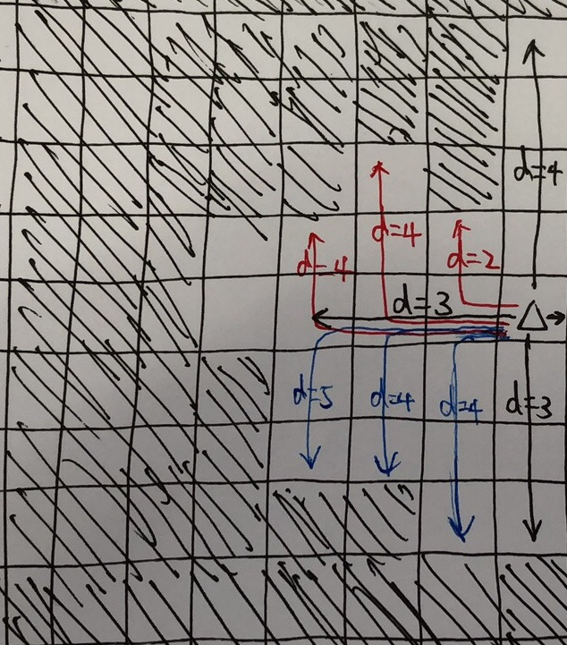
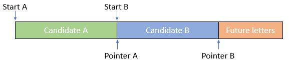

这次比赛中设计最难的是第四题，可是时限似乎又出了问题。
标记难度：Easy
提交次数：1/1
代码效率：80ms
题意
给定一个字符列表和一系列字符串，问能用这些字符组成的字符串的总长度是多少。
分析
直接判断每个字符串的每个字母的出现次数是否<=要求的字符列表内的出现次数即可。
代码
1 2 3 4 5 6 7 8 9 10 11 12 13 14 15 16 17 18 19 20 21 22 23 24 class Solution {public : int countCharacters (vector <string >& W, string C) int wcnt[26 ], ccnt[26 ]; int ans = 0 ; memset (ccnt, 0 , sizeof (ccnt)); for (char c: C) ccnt[c - 'a' ]++; for (string w: W) { memset (wcnt, 0 , sizeof (wcnt)); for (char c: w) wcnt[c - 'a' ]++; bool ok = true ; for (int i = 0 ; i < 26 ; i++) if (wcnt[i] > ccnt[i]) { ok = false ; break ; } if (ok) ans += w.length(); } return ans; } };
标记难度：Medium
提交次数：1/1
代码效率：248ms
题意
返回单层的和最大且层数最小的一棵二叉树的层。
分析
直接做BFS然后计算每层的和大小即可。
代码
1 2 3 4 5 6 7 8 9 10 11 12 13 14 15 16 17 18 19 20 21 22 class Solution {public : int maxLevelSum (TreeNode* root) vector <int > levelSum(2 , 0 ); queue <pair<TreeNode*, int >> q; q.emplace(root, 1 ); while (!q.empty()) { TreeNode* node = q.front().first; int depth = q.front().second; q.pop(); while (levelSum.size() <= depth) levelSum.push_back(0 ); levelSum[depth] += node->val; if (node->left != nullptr ) { q.emplace(node->left, depth + 1 ); } if (node->right != nullptr ) { q.emplace(node->right, depth + 1 ); } } return max_element(levelSum.begin(), levelSum.end()) - levelSum.begin(); } };
标记难度：Medium
提交次数：1/1
代码效率：48ms
题意
给定一个方格图，1表示陆地，0表示水，问所有水格中到陆地最近的格子的距离。
分析
这道题规模很小，我使用的思路也很简单：
首先计算出每个水格到正上方和正下方最近的陆地/岸的距离，记为d
显然，该格到最近的陆地的距离不可能超过d
因此分别遍历该格左侧和右侧d个格的距离内的水格，找出离它们最近的正上方/正下方的水格，计算曼哈顿距离
如果找到了陆地格，则更新d

如上图所示，当前格子上下的最小距离是d=3，左上侧（红色线）找到的最小距离是2，左下侧（蓝色线）找到的最小距离是4。
上述算法的整体时间复杂度为O(N^3)。
代码
1 2 3 4 5 6 7 8 9 10 11 12 13 14 15 16 17 18 19 20 21 22 23 24 25 26 27 28 29 30 31 32 33 34 35 36 37 38 39 40 41 42 43 44 45 46 47 48 49 50 51 52 53 54 55 56 57 58 59 60 61 62 63 64 65 66 67 68 69 class Solution {public : int maxDistance (vector <vector <int >>& grid) int maxUp[100 ][100 ], maxDown[100 ][100 ]; int n = grid.size(), m = grid[0 ].size(); bool has1 = false , has0 = false ; for (int i = 0 ; i < n; i++) { for (int j = 0 ; j < m; j++) { if (grid[i][j] == 1 ) has1 = true ; else has0 = true ; if (has1 && has0) break ; } if (has1 && has0) break ; } if (!has1 || !has0) return -1 ; for (int j = 0 ; j < m; j++) { for (int i = 0 ; i < n; i++) { if (grid[i][j] == 1 ) maxUp[i][j] = -1e9 ; else if (i > 0 ) { if (grid[i-1 ][j] == 1 ) maxUp[i][j] = 0 ; else maxUp[i][j] = maxUp[i-1 ][j] + 1 ; } else maxUp[i][j] = 1e9 ; } for (int i = n - 1 ; i >= 0 ; i--) { if (grid[i][j] == 1 ) maxUp[i][j] = -1e9 ; else if (i < n - 1 ) { if (grid[i+1 ][j] == 1 ) maxDown[i][j] = 0 ; else maxDown[i][j] = maxDown[i+1 ][j] + 1 ; } else maxDown[i][j] = 1e9 ; } } int ans = 0 ; for (int i = 0 ; i < n; i++) { for (int j = 0 ; j < m; j++) { if (grid[i][j] == 1 ) continue ; int d = min(maxUp[i][j], maxDown[i][j]); for (int k = 1 ; k <= d && j + k < m; k++) { if (grid[i][j+k] != 1 ) { d = min(d, maxUp[i][j + k] + k); d = min(d, maxDown[i][j + k] + k); } else { d = min(d, k - 1 ); break ; } } for (int k = 1 ; k <= d && j - k >= 0 ; k++) { if (grid[i][j - k] != 1 ) { d = min(d, maxUp[i][j - k] + k); d = min(d, maxDown[i][j - k] + k); } else { d = min(d, k - 1 ); break ; } } ans = max(ans, d); } } return ans + 1 ; } };
标记难度：Hard
提交次数：2/5
代码效率：
题意
找到一个字符串中所有子串中字典序最大的串。
分析
首先，很显然，字典序最大的串一定是后缀，所以这道题要求我们找到字典序最大的后缀。
……所以这道题是一道后缀数组模板题，将后缀数组模板复制粘贴即可……
当然，还有别的做法。显然，最大的后缀一定以字符串中最大的字符开头，所以我们可以首先找到这样的字符。然后，在这样的开头中，之后一个字符必然也需要是最大的。然后以此类推……就会遇到一个问题，如果两个考虑中的字符串相遇（是相遇，不是overlap）了怎么办？如果完全不考虑这个问题，那么这种方法的复杂度恐怕会变得很高（因为可能会遇到aaaa...这种测例）。

如上图，不妨记左半部分为A，中间部分为B，后面的部分为C。已知A == B，则显然有ABC = AAC > AC = BC，否则如果C > A，则最开始根本就不应该选A，而应该选C。因此我们可以根本不考虑相遇时后面的字符串B了，直接把它丢掉即可。
假设某一时刻共有k个需要考虑的字符串，则最坏情况下也只需要增加字符N / k次（然后就可以开始丢相遇的字符串了），因此总时间复杂度是`O(N)。
代码
后缀数组
1 2 3 4 5 6 7 8 9 10 11 12 13 14 15 16 17 18 19 20 21 22 23 24 25 26 27 28 29 30 31 32 33 34 35 36 37 38 39 40 41 42 43 44 45 46 47 48 49 50 51 52 53 54 55 56 57 58 59 60 61 62 63 64 65 66 67 68 69 70 71 72 73 74 75 76 77 78 79 80 81 82 83 84 85 86 87 88 89 90 91 92 93 94 95 96 97 98 99 100 101 102 103 104 105 106 107 108 109 110 111 112 113 114 115 116 117 118 119 120 121 122 123 124 125 126 127 128 129 class Solution { struct SuffixTree { struct Suffix { int index; int rank[2 ]; friend bool operator < (const Suffix& suffix1, const Suffix& suffix2) { if (suffix1.rank[0 ] != suffix2.rank[0 ]) return suffix1.rank[0 ] < suffix2.rank[0 ]; if (suffix1.rank[1 ] != suffix2.rank[1 ]) return suffix1.rank[1 ] < suffix2.rank[1 ]; return suffix1.index < suffix2.index; } }; const static int MAXN = 1e5 + 5 ; char s[MAXN]; int suffix[MAXN]; Suffix suffixTmp[MAXN]; int suffixInv[MAXN]; int lcp[MAXN]; int n; SuffixTree(const char * a) { strcpy (s, a); n = strlen (s); buildSuffix(); buildLCP(); } void buildSuffix () for (int i = 0 ; i < n; i++) { suffixTmp[i].index = i; suffixTmp[i].rank[0 ] = s[i]; suffixTmp[i].rank[1 ] = i < n - 1 ? s[i + 1 ] : -1 ; } sort(suffixTmp, suffixTmp + n); for (int k = 1 ; (1 << k) < n; k++) { int rank = 0 ; int prevRank[2 ]; for (int i = 0 ; i < n; i++) { if (i > 0 && (suffixTmp[i].rank[0 ] != prevRank[0 ] || suffixTmp[i].rank[1 ] != prevRank[1 ])) rank++; memcpy (prevRank, suffixTmp[i].rank, sizeof (prevRank)); suffixTmp[i].rank[0 ] = rank; suffixInv[suffixTmp[i].index] = i; } for (int i = 0 ; i < n; i++) { int nextIdx = suffixTmp[i].index + (1 << k); int nextRank; if (nextIdx >= n) nextRank = -1 ; else nextRank = suffixTmp[suffixInv[nextIdx]].rank[0 ]; suffixTmp[i].rank[1 ] = nextRank; } radixSort(suffixTmp, n); } for (int i = 0 ; i < n; i++) { suffix[i] = suffixTmp[i].index; suffixInv[suffix[i]] = i; } } void buildLCP () int lastLCP = 0 ; for (int i = 0 ; i < n; i++) { if (suffixInv[i] == n - 1 ) { lcp[suffixInv[i]] = 0 ; lastLCP = 0 ; continue ; } int j = suffix[suffixInv[i] + 1 ]; while (i + lastLCP < n && j + lastLCP < n && s[i+lastLCP] == s[j+lastLCP]) lastLCP++; lcp[suffixInv[i]] = lastLCP; if (lastLCP > 0 ) lastLCP--; } } Suffix tmp[MAXN]; int cnt[MAXN]; void radixSort (Suffix suffixes[], int n) for (int i = 1 ; i >= 0 ; i--) countSort(suffixes, tmp, n, i); } void countSort (Suffix suffixes[], Suffix tmp[], int n, int digit) memset (cnt, 0 , sizeof (cnt)); int * cnt2 = cnt + 1 ; for (int i = 0 ; i < n; i++) { cnt2[suffixes[i].rank[digit]]++; } for (int i = 0 ; i < n; i++) { cnt2[i] += cnt2[i-1 ]; } for (int i = n - 1 ; i >= 0 ; i--) { tmp[--cnt2[suffixes[i].rank[digit]]] = suffixes[i]; } memcpy (suffixes, tmp, sizeof (Suffix) * n); } void search () } }; public : string lastSubstring (string s) SuffixTree suffixTree(s.c_str()); int i = suffixTree.suffix[s.size() - 1 ]; return s.substr(i); } };
O(n)
代码主要参考了Leetcode 1163 - Python O(n) with explanation - comment ，要不然我自己写不出来这么简洁的。
1 2 3 4 5 6 7 8 9 10 11 12 13 14 15 16 17 18 19 20 21 22 23 24 25 26 27 28 29 30 class Solution {public : string lastSubstring (string s) vector <int > cands; int n = s.length(); for (int i = 0 ; i < n; i++) { cands.push_back(i); } int i = 0 ; while (cands.size() > 1 ) { vector <int > newCand; int maxn = -1 ; for (int j: cands) if (i + j < n) maxn = max(maxn, (int ) s[i + j]); for (int k = 0 ; k < cands.size(); k++) { int j = cands[k]; if (k - 1 >= 0 && cands[k - 1 ] + i == j) continue ; if (i + j >= n) continue ; if ((int ) s[j + i] == maxn) newCand.push_back(j); } i++; cands = newCand; } return s.substr(cands[0 ]); } };